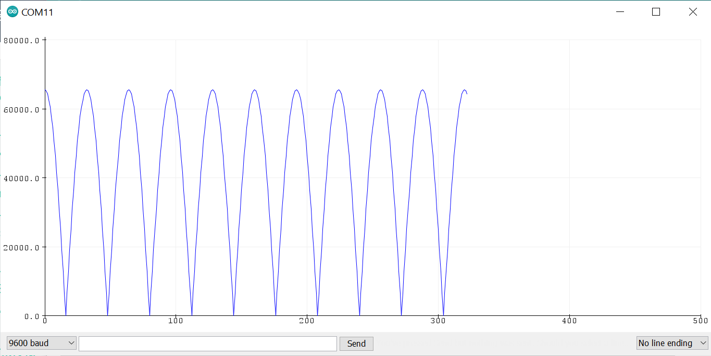
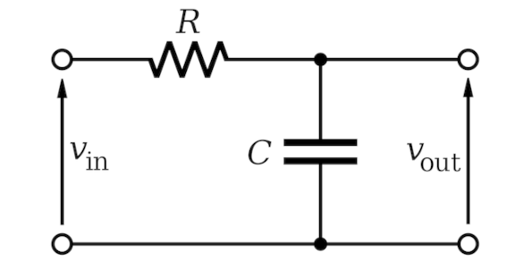

ARM Mbed OS for STM32: Code Examples (Part 2)#
เนื้อหาในส่วนนี้สาธิตการเขียนโค้ดโดยใช้ Mbed OS สำหรับบอร์ดไมโครคอนโทรลเลอร์ เช่น บอร์ด STM32 NUCLEO เป็นต้น โดยนำเสนอเป็น ตอนที่ 2 ต่อจาก ตอนที่ 1
Keywords: Mbed OS, STM32 Nucleo, Mbed-enabled Platforms, RTOS Programming
▷ ตำแหน่งของขาและคอนเนกเตอร์บนบอร์ด NUCLEO-F446RE#
ในการทดลองการทำงานของโค้ดตัวอย่าง อาจจำเป็นต้องมีการต่อวงจรภายนอก เพื่อเชื่อมต่อกับบอร์ดไมโครคอนโทรลเลอร์ ดังนั้นแผนผังแสดงตำแหน่งของขาบนบอร์ด หรือ PinOut / PinMap จึงเป็นสิ่งสำคัญ รูปต่อไปนี้เป็นตัวอย่างของแผนผังสำหรับขาของบอร์ด NUCLEO-F446RE

รูปภาพ: แสดงตำแหน่งขาต่าง ๆ ของคอนเนกเตอร์ด้านซ้าย CN7 บนบอร์ด NUCLEO-F446RE (Source: ARM Mbed)

รูปภาพ: แสดงตำแหน่งขาต่าง ๆ ของคอนเนกเตอร์ด้านขวาบนบอร์ด NUCLEO-F446RE (Source: ARM Mbed)
▷ การสร้างสัญญาณ PWM สำหรับ LED Blink#
โดยทั่วไปแล้ว ไมโครคอนโทรลเลอร์ เช่น STM32 มีวงจรภายในที่สามารถสร้างสัญญาณแบบ PWM (Pulse Width Modulation) และมีหลายขา GPIO ที่สามารถใช้เป็น PWM Output ได้ แต่ไม่ใช่ทุกขา (ดังนั้นต้องตรวจสอบว่า ขาใดของบอร์ดที่ได้เลือกใช้งาน สามารถทำงานเป็น PWM Pins ได้บ้าง)
สัญญาณ PWM เป็นสัญญาณที่มีความถี่คงที่ แต่สามารถปรับช่วงกว้างของพัลส์ที่เป็น High ได้ จากความกว้างเป็น 0 ไปจนถึงเต็มหนึ่งคาบ หรือเรียกว่ามีค่า Duty Cycle ตั้งแต่ 0% ถึง 100% ไมโครคอนโทรลเลอร์ที่ไม่มีวงจร DAC ก็จะใช้วิธีการสร้างสัญญาณ PWM แทนการสร้างสัญญาณแรงดันไฟฟ้าแบบแอนะล็อก
ตัวอย่างนี้สาธิตการสร้างสัญญาณ PWM โดยการสร้างอ็อบเจกต์จากคลาสชื่อ
PwmOut
และใช้กับขาเอาต์พุตที่ตรงกับ onboard LED ตัวอย่างคำสั่งที่เกี่ยวข้อง ได้แก่
void write( float value )เขียนค่าเลขทศนิยมในข่วง0.0f(0%) ถึง1.0f(100%) สำหรับค่า Duty Cyclevoid period( float seconds)เขียนค่าเลขทศนิยมสำหรับคาบของสัญญาณ (Period) หน่วยเป็นวินาทีvoid period_ms( int ms )เขียนค่าเลขจำนวนเต็มสำหรับคาบของสัญญาณ หน่วยเป็นมิลลิวินาทีvoid period_us( int us )เขียนค่าเลขจำนวนเต็มสำหรับคาบของสัญญาณ หน่วยเป็นไมโครวินาทีvoid pulsewidth( float seconds )เขียนค่าเลขทศนิยมสำหรับค่าความกว้างของพัลส์ หน่วยเป็นวินาทีvoid pulsewidth_ms( int ms )เขียนค่าจำนวนเต็มสำหรับค่าความกว้างของพัลส์ หน่วยเป็นมิลลิวินาทีvoid pulsewidth_us( int us )เขียนค่าจำนวนเต็มสำหรับค่าความกว้างของพัลส์ หน่วยเป็นไมโครวินาทีvoid suspend()และvoid resume()สำหรับหยุดการสร้างสัญญาณ PWM ชั่วคราว และบันทึกสถานะการทำงานเดิมไว้ หรือเปิดการสร้างสัญญาณใหม่อีกครั้งตามสถานะเดิม ตามลำดับ
สัญญาณเอาต์พุตมีคาบเวลาเท่ากับ 1000 มิลลิวินาที หรือ ความถี่ 1 Hz โดยทำคำสั่ง
led.period_ms(...) และนำไปใช้ควบคุมสถานะของ LED ภายนอก
ค่า Duty Cycle มีค่าเท่ากับ 50% โดยใช้คำสั่ง
led.pulsewidth_ms(...) เพื่อกำหนดความกว้างของพัลส์ช่วง High
ให้เท่ากับครึ่งหนึ่งของคาบ ดังนั้น LED จะกระพริบได้หนึ่งครั้งต่อวินาที
#include "mbed.h"
#include "rtos.h"
#define PERIOD_MS (1000)
PwmOut led( LED1 );
int main(){
led.period_ms( PERIOD_MS ); // set PWM period (in msec)
led.pulsewidth_ms( PERIOD_MS/2 ); // set PWM pulse width (in msec)
printf( "Main thread waits forever...\r\n" );
while(1) {
osDelay( osWaitForever );
}
}
ข้อสังเกต: ถ้ามีการคำสั่ง suspend() สำหรับอ็อบเจกต์ของ PwmOut
แล้วมีการทำคำสั่งเพื่อเปลี่ยนแปลงค่าความถี่และความกว้างของพัลส์ของสัญญาณดังกล่าว ก็จะไม่มีผล
ถ้าทำคำสั่ง resume() เพื่อการสร้างสัญญาณอีกครั้ง ลองดูตัวอย่างโค้ดต่อไปนี้
#include "mbed.h"
PwmOut pwm( LED1 ); // use PWM out on LED1 pin
int main() {
// read the PWM pulsewidth and period before suspend
printf( "# 1) pulsewidth=%d us, period=%d us\r\n",
pwm.read_pulsewitdth_us(),
pwm.read_period_us() );
pwm.suspend(); // suspend the PWM output and keep it state
// update PWM period (=5msec) and duty cycle (=0.5 or 50%)
pwm.period_ms( 5 );
pwm = 0.5;
pwm.resume(); // resume the PWM output
// read the PWM pulse width and period after resume
printf( "# 2) pulsewidth=%d us, period=%d us\r\n",
pwm.read_pulsewitdth_us(),
pwm.read_period_us() );
while (1) {
ThisThread::sleep_for( 100ms );
}
return 0;
}
ตัวอย่างข้อความเอาต์พุต
# 1) pulsewidth=0 us, period=20000 us
# 2) pulsewidth=0 us, period=20000 us
ซึ่งจะเห็นได้ว่า ความกว้างของพัลส์และคาบของสัญญาณ PWM ไม่ใช่ค่าที่ต้องการ
(คาบควรจะเป็น 5 msec และค่า Duty Cycle เป็น 0.5% ) หลังจากที่ได้ทำคำสั่ง resume()
และยังเป็นค่าเดิมก่อนทำคำสั่ง suspend()
▷ การสร้างสัญญาณ PWM สำหรับ LED Dimming#
ตัวอย่างนี้สาธิตการสร้างสัญญาณ PWM ด้วยใช้คำสั่งของ
PWMOut
เพื่อใช้ในการปรับความสว่างของวงจร LED โดยการเปลี่ยนค่า Duty Cycle
หรือ ความกว้างของพัลส์ (Pulse Width) ให้ค่อย ๆ เพิ่มขึ้นและลดลง เช่น ตามรูปแบบของคลื่นแบบฟันเลื่อย
(Sawtooth Wave)
ในตัวอย่างนี้ได้เลือกใช้ชา PB_0 / A3 และต่อกับโมดูล LED ภายนอก หรือถ้าต้องการใช้
onboard LED ก็ให้เปลี่ยนเป็นขา LED1 แทน
#include "mbed.h"
#define DELAY_MS (20ms)
// the number of steps for changing LED brightness
const int N = 32;
const uint32_t PWM_PERIOD_US = 2000;
PwmOut pwm( PB_0 ); // choose any PWM-capable GPIO pin
void update_pwm() {
static uint32_t index = 0;
uint32_t level = (index >= N) ? (2*N - index) : index;
uint32_t pulsewidth = (PWM_PERIOD_US * level) / N;
// send the current value of the pulse width to serial
printf( "%lu\n", pulsewidth );
// update the PWM output
pwm.pulsewidth_us( pulsewidth );
ThisThread::sleep_for( DELAY_MS );
index = (index+1) % (2*N);
}
int main() {
pwm = 0.0f; // turn off LED, by setting pulsewidth to 0
pwm.period_us( PWM_PERIOD_US ); // set PWM period
printf( "#Mbed PWMOut - LED Dimming Demo\n" );
while(1) {
update_pwm();
}
return 0;
}
รูปภาพ: แสดงรูปกราฟใน Serial Plotter จากลำดับข้อมูลที่ได้รับมาจากบอร์ด
คำถาม: ถ้าแก้ไขโค้ดสำหรับฟังก์ชัน update_pwm() ดังต่อไปนี้ และนำไปทดลองกับฮาร์ดแวร์จริง
จะให้ผลแตกต่างไปอย่างไร ?
void update_pwm() {
static uint32_t index = 0;
uint32_t level = (index >= N) ? (2*N - index) : index;
// convert level to pulse width
uint32_t pulsewidth = (PWM_PERIOD_US * level) / N;
// scale up the pulsewidth value
pulsewidth = (pulsewidth * 8) / 5;
// limit the pulsewidth value (must not be greather than the period)
pulsewidth = (pulsewidth > PWM_PERIOD_US) ? PWM_PERIOD_US : pulsewidth;
// send the current value of the pulse width to serial
printf( "%lu\n", pulsewidth );
// update the PWM output
pwm.pulsewidth_us( pulsewidth );
ThisThread::sleep_for( DELAY_MS );
index = (index+1) % (2*N);
}
▷ การสร้างสัญญาณเอาต์พุตแอนะล็อกด้วย DAC ภายใน STM32F4#
บอร์ด NUCLEO อย่างเช่น NUCLEO-F446RE
มีวงจร DAC อยู่ภายใน และมีขาที่ใช้เป็นเอาต์พุตสำหรับสัญญาณแอนะล็อกได้ 2 ขา คือ PA_4 และ PA_5
(ขานี้ตรงกับ onboard LED)
สัญญาณเอาต์พุตที่ได้จะอยู่ในช่วง 0.0V ถึง 3.3V (Vref)
ตัวอย่างนี้สาธิตการสร้างสัญญาณเอาต์พุตแบบแอนะล็อกด้วยคำสั่ง
AnalogOut
และมีคำสั่งที่เกี่ยวข้องสำหรับการกำหนดค่าเอาต์พุต 3 รูปแบบ
void write(float value)เขียนค่าเป็นfloatที่อยู่ในช่วง0.0f(0V) ถึง1.0f(3.3V)void write_u16(unsigned short value)เขียนค่าเป็นเลขจำนวนเต็มขนาด 16 บิต ในช่วง 0 (0V) ถึง 65535 (3.3V)AnalogOut& operator= (float value)ให้ผลเหมือนคำสั่งwrite(...)
#include "mbed.h"
#define PI 3.14159265358
// the number of steps for changing LED brightness
const int N = 32;
AnalogOut aout( PA_4 ); // use PA_4 or PA_5 pin
int main() {
aout = 0.0f;
printf( "#Mbed AnalogOut/DAC Demo\n" );
uint16_t level;
uint32_t index = 0;
while(1) {
// Since we choose the argument for the sin()
// function between 0 and PI, the value of the
// function will between 0 and 1.0
level = (uint16_t)( 65535 * sin(index*PI/N) );
printf( "%u\n", level );
// update the DAC output
aout.write_u16( level );
ThisThread::sleep_for( 100ms );
index = (index+1) % N;
}
return 0;
}
ถ้านำโค้ดนี้ไปทดลอง จะเห็นได้ว่า LED จะค่อย ๆ สว่างขึ้นแล้วดับลง

รูปภาพ: แสดงรูปกราฟใน Serial Plotter จากลำดับข้อมูลที่ได้รับมาจากบอร์ด
รูปภาพ: การต่อวงจรทดลองโดยใช้โมดูล LED ที่ขา PA_4 ของบอร์ด NUCLEO-F446RE
ข้อสังเกต: ถ้าเลือกใช้งานขาไม่ถูกต้อง เมื่อโปรแกรมทำงาน จะเกิดความผิดพลาดขณะทำงาน (Runtime Error) และมีข้อความส่งออกมาทาง Serial ตามตัวอย่างดังนี้
++ MbedOS Error Info ++
Error Status: 0x80010130 Code: 304 Module: 1
Error Message: pinmap not found for peripheral
Location: 0x800208F
Error Value: 0x21
...
▷ การอ่านค่าจากวงจร ADC ภายใน STM32F4#
ตัวอย่างนี้สาธิตการใช้คลาส
AnalogIn
เพื่ออ่านค่าจากวงจร ADC ที่มีอยู่ภายในชิปไมโครคอนโทรลเลอร์ STM32
(เช่น ชิป STM32F4 / L4)
ค่าที่จะอ่านจาก ADC แบ่งได้เป็นสองกรณีคือ ค่าที่ได้จากเซนเซอร์อุณหภูมิภายในชิป
(Internal Temperature Sensor) มีค่าอยู่ในช่วง
-40 ~ +125 ℃ (ความแม่นยำ ±1.5 ℃) และค่าสำหรับแรงดันอ้างอิง
(Internal Reference Voltage) ซึ่งมีค่าประมาณ 1.2V
แล้วนำมาแสดงเป็นข้อความออกทาง Serial / UART ด้วยคำสั่ง printf(...)
#include "mbed.h"
DigitalOut led( LED1 ); // onboard LED
// target board: NUCLEO F4464E
// use MBED_CONF_TARGET_DEFAULT_ADC_VREF for ADC voltage reference
AnalogIn adc_temp( ADC_TEMP );
AnalogIn adc_vref( ADC_VREF );
#define TEMP_V25 (0.76f)
#define TEMP_VSENSE (3.3f/65536)
#define TEMP_AVG_SLOPE (0.0025f)
int main() {
uint32_t temp, vref;
float voltage;
float temp_degc;
printf( "Mbed: Reading internal ADC...\n" );
while(1) {
// read internal chip temperature
temp = adc_temp.read_u16();
printf( "ADC Temp. = %lu\r\n", temp );
voltage = TEMP_VSENSE*temp;
printf("ADC Temp. = %.3f V\r\n", voltage );
temp_degc = (voltage - TEMP_V25) / TEMP_AVG_SLOPE + 25;
printf ("ADC Temp. = %.1f deg.C\r\n", temp_degc );
// read internal voltage reference
vref = adc_vref.read_u16();
printf( "ADC VRef. = %lu\r\n", vref );
voltage = (3.3f*vref)/65536;
printf( "ADC VRef. = %.3f V\r\n", voltage );
led = !led; // toggle LED
ThisThread::sleep_for( 1000ms );
}
return 0;
}
ให้แก้ไขไฟล์ mbed_app.json ในโปรเจกต์ของ Mbed
เพื่อให้สามารถใช้ข้อมูลแบบ float กับคำสั่ง printf() ได้
และเลือกใช้ไลบรารี minimal-printf แทน std สำหรับ target.printf_lib
(การเลือกใช้ไลบรารีสำหรับ printf() ที่แตกต่างกัน จะทำให้ขนาดของโปรแกรมที่ได้จากการคอมไพล์
มีขนาดแตกต่างกัน)
{
"target_overrides": {
"*": {
"platform.stdio-baud-rate": 115200,
"target.printf_lib": "minimal-printf",
"platform.minimal-printf-enable-floating-point": true,
"platform.minimal-printf-set-floating-point-max-decimals": 6,
"platform.minimal-printf-enable-64-bit": false
}
}
}
ตัวอย่างข้อความเอาต์พุตมีดังนี้
รูปภาพ: ข้อความเอาต์พุตจากการอ่านค่า ADC ของ STM32F4
▷ การทดลอง DAC / ADC Loopback#
ตัวอย่างนี้สาธิตการสร้างสัญญาณเอาต์พุตแบบแอนะล็อกด้วย DAC และอ่านค่าสัญญาณดังกล่าวด้วย ADC ของ STM32F4 ในลักษณะ Loopback แล้วนำค่าที่ได้มาแสดงรูปกราฟสัญญาณโดยส่งค่าไปยังคอมพิวเตอร์ทาง Serial
ตามโค้ดตัวอย่างนี้ ได้เลือกใช้ขา PA_1 / A1 สำหรับขา ADC และขา PA_4 / A2
ค่าสำหรับเอาต์พุตจะเพิ่มขึ้นจาก 0 ถึง 1023 (หรือมีความละเอียดเท่ากับ 10 บิต) แล้ววนซ้ำไปเรื่อย ๆ
เว้นระยะห่างประมาณ 20 msec
เมื่อได้กำหนดค่าให้ DAC เป็นเอาต์พุตแล้ว ก็จะรอเวลา เช่น 5 ไมโครวินาที แล้วจึงอ่านค่าอินพุตจาก ADC
ตามจำนวน SAMPLES ที่กำหนดไว้ นำค่าที่อ่านมาบวกรวมกันแล้วจึงหาค่าเฉลี่ย
ค่าเอาต์พุตและอินพุตในแต่ละรอบ จะถูกส่งเป็นข้อความผ่านทาง Serial
#include "mbed.h"
AnalogIn ain( A1 ); // analog input
AnalogOut aout( A2 ); // analog output
#define RESOLUTION_BITS (10)
#define SAMPLES (4)
const int N = (1 << RESOLUTION_BITS);
int main() {
uint32_t write_value, read_value;
while(1) {
for ( int i=0; i < N; i++ ) {
write_value = (i << (16-RESOLUTION_BITS));
// update DAC output
aout.write_u16( (uint16_t) write_value );
wait_us(5);
read_value = 0;
// read the ADC value
for ( int j=0; j < SAMPLES; j++ ) {
// sum up the ADC reading value
read_value += ain.read_u16();
}
// use the average value
read_value = read_value / SAMPLES;
printf( "aout:%lu,ain:%lu\r\n",
write_value, read_value );
ThisThread::sleep_for( 20ms );
}
}
return 0;
}
รูปภาพ: แสดงรูปกราฟใน Arduino Serial Plotter สำหรับลำดับค่าตัวเลขของ ADC / DAC ที่ถูกส่งมาทาง Serial
▷ การอ่านค่าจากวงจรตัวต้านทานปรับค่าได้และปรับความสว่างของ LED#
ตัวอย่างนี้สาธิตการอ่านค่าแรงดันไฟฟ้าจากวงจรแบ่งแรงดัน (Potentiometer) โดยใช้ขาอินพุตของวงจร ADC ภายในชิป STM32F4 และนำค่าที่ได้ซึ่งเป็นเลขจำนวนเต็ม 16 บิต ไปใช้กำหนดค่าสำหรับความกว้างของพัลส์สำหรับสัญญาณ PWM (มีความถี่ 500Hz หรือ คาบเท่ากับ 2000us)
#include "mbed.h"
const uint32_t PERIOD_US = 2000; // 2msec period
AnalogIn ain( A0 ); // use A0 pin for analog input
PwmOut pwm( A1 ); // use A1 pin for PWM output
int main() {
uint32_t ain_value;
float pwm_value;
pwm = 0.0f;
pwm.period_us( PERIOD_US );
while(1) {
// read ADC value and scale down to 12 bits
ain_value = ain.read_u16() >> 4;
// convert 12-bit value to PWM duty cycle: between 0.0f and 1.0f
pwm_value = (1.0f*ain_value) / (1UL << 12);
// update PWM output
pwm.write( pwm_value );
// show current values
printf( "ain:%lu,pulsewidth:%lu\n",
ain_value, (uint32_t)(pwm_value*PERIOD_US) );
ThisThread::sleep_for( 20ms );
}
return 0;
}
รูปภาพ: แสดงรูปกราฟใน Arduino Serial Plotter
สำหรับลำดับค่าตัวเลขของ ADC / PWM Output ที่ถูกส่งมาทาง Serial
ในขณะที่มีการเปลี่ยนแปลงค่าอินพุต (ain: 0..4095) และเอาต์พุต (pulsewidth: 0..1999)
รูปภาพ: การต่อวงจรทดลองโดยใช้โมดูล Linear Potentiometer และโมดูล LED
▷ การสัญญาณ PWM เพื่อปรับสีของโมดูล RGB#
ตัวอย่างโค้ดนี้สาธิตการอ่านค่าจากช่องสัญญาณแอนะล็อกอินพุตจำนวน 3 ช่อง
จากโมดูลตัวต้านทานปรับค่าได้แบบเชิงเส้น (Linear Potentiometer)
นำมาต่อเข้าที่ขา {A0, A1, A2} ของบอร์ด STM32 NUCLEO
ค่าอินพุตที่อ่านได้ ซึ่งเป็นเลขทศนิยมในช่วง 0.0f ถึง 1.0f จะถูกนำไปใช้สำหรับค่าเอาต์พุต
ของสัญญาณ PWM จำนวน 3 ช่องสัญญาณ โดยเลือกใช้ขา {D9,D10,D11}
ตามลำดับ และนำไปใช้เป็นสัญญาณควบคุมสำหรับโมดูล RGB เพื่อปรับสีของแสงที่ปรากฎ
#include "mbed.h"
const uint32_t PERIOD_US = (2000);
AnalogIn pot_r( A0 ), pot_g( A1), pot_b( A2 );
PwmOut pwm_r( D9 ), pwm_g( D10), pwm_b( D11 );
int main() {
float r, g, b;
// set the period of the three PWM signals
pwm_r.period_us( PERIOD_US );
pwm_g.period_us( PERIOD_US );
pwm_b.period_us( PERIOD_US );
while(1) {
// read analog inputs and write PWM outputs (float values)
pwm_r.write( r = pot_r.read() );
pwm_g.write( g = pot_g.read() );
pwm_b.write( b = pot_b.read() );
// convert float values to 8-bit values for RGB
printf( "r:%u,g:%u,b:%u\n",
(uint8_t)(r*255),
(uint8_t)(g*255),
(uint8_t)(b*255) );
ThisThread::sleep_for( 100ms );
}
return 0;
}
รูปภาพ: แสดงรูปกราฟสำหรับข้อมูลที่ได้รับมาซึ่งเป็นเลขจำนวนเต็ม 8 บิต สำหรับค่าสี RGB
รูปภาพ: การเชื่อมต่อระหว่างบอร์ด NUCLEO-F466RE กับโมดูลตัวต้านทานปรับค่าได้และโมดูล RGB LED จำนวน 3 ชุด
รูปภาพ: การปรับสีของแสงจากโมดูล LED โดยเลื่อนตำแหน่งของโมดูลตัวต้านทานปรับค่าได้แบบเชิงเส้น
▷ การอ่านค่าสัญญาณ PWM ด้วย ADC#
โค้ดตัวอย่างนี้สาธิตการสร้างสัญญาณ PWM เป็นเอาต์พุตที่ขา D10 / PB_6
และมีความถี่ 1000 Hz (คาบเท่ากับ 1000 us หรือ 1 ms)
แล้วนำไปต่อกับวงจรตัวกรองความถี่ต่ำที่เรียกว่า Low-Pass Filter
ประกอบด้วยตัวต้านทานและตัวเก็บประจุ เช่น 4.7kΩ และ 10uF เป็นต้น
จากนั้นจึงวัดค่าแรงดันไฟฟ้าที่ผ่านตัวกรองดังกล่าวโดยใช้ขาของ ADC เช่น ขา A0
และนำไปแปลงเป็นข้อความส่งออกทาง Serial
#include "mbed.h"
using namespace std::chrono_literals;
const auto DELAY_MS = 10ms;
const uint32_t PERIOD_US = 1000; // PWM period in microseconds
const uint32_t VREF = 3300; // Vref in mV
AnalogIn ain( A0 ); // analog input pin
PwmOut pwm( D10 ); // PWM output pin
int main() {
float pwm_value = 0.0f;
float ain_value;
bool increasing = true;
pwm.write( pwm_value );
pwm.period_us( PERIOD_US );
while (1) {
// update PWM value
if (increasing) { // increase the pulse width
pwm_value += 0.01f;
if ( pwm_value > 1.0f ) {
pwm_value = 1.0f;
increasing = false;
}
}
else { // decrease the pulse width
pwm_value -= 0.01f;
if ( pwm_value < 0.0f ) {
pwm_value = 0.0f;
increasing = true;
}
}
// write PWM output value
pwm.write( pwm_value );
wait_us( PERIOD_US );
// read analog input
ain_value = ain.read();
// convert the float value of the analog input
// between 0.0 to 1.0 to the coresponding voltage
// between 0 and 3300mV
printf( "ain:%lu\n", (uint32_t)(ain_value*VREF) );
ThisThread::sleep_for( DELAY_MS );
}
return 0;
}

รูปภาพ: วงจร Low-Pass RC Filter ที่มีสัญญาณอินพุต (Vin) ของวงจรตัวกรองอยู่ด้านซ้าย และสัญญาณเอาต์พุต (Vout) อยู่ด้านขวา (Source: Wikipedia)
รูปภาพ: แสดงรูปกราฟของข้อมูลที่ได้รับผ่านทาง Serial ซึ่งเป็นตัวเลขจำนวนเต็มของแรงดันไฟฟ้า-อินพุตที่วัดได้ด้วย ADC ในช่วง 0 ถึง 3300 mV
รูปภาพ: การต่อวงจรทดลอง Low-Pass RC Filter บนเบรดบอร์ดร่วมกับบอร์ด NUCLEO-F466RE
ขา D10 ซึ่งเป็นสัญญาณ PWM นำไปใช้เป็นสัญญาณ Vin ของวงจรตัวกรองและสัญญาณ Vout ต่อกับขา อินพุต-แอนะล็อก A0
▷ การวัดความถี่ของสัญญาณ PWM#
ในกรณีที่มีการสร้างสัญญาณ PWM เป็นเอาต์พุต และกำหนดให้ Duty Cycle เท่ากับ 50% ก็จะได้สัญญาณดิจิทัลแบบคลื่นสี่เหลี่ยม (Rectangular Wave) แล้วถ้านำสัญญาณเอาต์พุตนี้ ป้อนกลับไปเป็นสัญญาณอินพุตให้ไมโครคอนโทรลเลอร์ และอยากทราบว่า มีความถี่ตรงกับที่กำหนดไว้หรือไม่ เราจะวัดความถี่ของสัญญาณได้อย่างไรบ้าง ตัวอย่างโค้ดต่อไปนี้สาธิตวิธีการ
หลักการทำงานคือ ให้เปิดใช้งานขาอินเทอร์รัพท์ภายนอก แล้วสร้างฟังก์ชันเพื่อทำหน้าที่เป็น Callback Function คอยบันทึกเวลาเมื่อเกิดเหตุการณ์ขอบขาขึ้น (Rising Edges) จำนวน 2 ครั้ง ถัดกัน แล้วจึงหาผลต่างของเวลา ก็จะได้คาบของสัญญาณ ถ้าไม่มีการเปลี่ยนแปลงความถี่หรือคาบในช่วงดังกล่าว
โค้ดตัวอย่างนี้ จะสร้างสัญญาณพัลส์ที่มีความกว้างของคาบตามที่ระบุไว้ในอาร์เรย์ตามลำดับ อยู่ระหว่าง
50 ถึง 100000 us (ไมโครวินาที) หรือจะได้ความถี่เท่ากับ 200kHz ถึง 10Hz
และสำหรับการต่อวงจรทดลอง ให้นำลวดสายไฟมาต่อระหว่างขา D2 กับ D11 ของบอร์ด NUCLEO
#include "mbed.h"
InterruptIn pwm_in( D2 ); // PWM input pin
PwmOut pwm_out( D11 ); // PWM output pin
#define N (10) // number of periods to be tested
const uint32_t PERIODS_US[] = {
5,10,50,100,500,1000,
5000,20000,50000,100000
};
volatile uint32_t ticker_ts[2]; // used to save timestamps
volatile uint32_t event_cnt = 0; // (rising-edge) event counter
void irq_callback() {
uint32_t ts = us_ticker_read();
ticker_ts[1] = ticker_ts[0];
ticker_ts[0] = ts;
event_cnt++;
}
void update_pwm_out( uint32_t period_us ) {
pwm_out.period_us( period_us );
pwm_out.pulsewidth_us( period_us/2 ); // 50% duty cycle
}
int main() {
uint32_t t_period;
// disable IRQ on digital pin for PWM input
pwm_in.disable_irq();
// set callback function for the rising edge event
pwm_in.rise( &irq_callback );
printf( "Mbed Frequency Measurement Demo\n" );
while (1) {
for ( uint32_t i=0; i < N; i++ ) {
// update PWM output (frequency and pulse width)
update_pwm_out( PERIODS_US[i] );
// clear event counter
event_cnt = 0;
// enable IRQ on digital pin for PWM input
pwm_in.enable_irq();
// wait until number of detected events >= 2
while ( event_cnt < 2 ) { wait_us(1); }
// disable IRQ on digital pin for PWM input
pwm_in.disable_irq();
// compute the time difference which is the PWM period
t_period = ticker_ts[0] - ticker_ts[1];
// show output message
printf( "measured period [%6lu] us, freq. %.1f Hz\r\n",
t_period, 1000000.0f/ t_period );
ThisThread::sleep_for( 500ms );
}
}
return 0;
}
รูปภาพ: ข้อความเอาต์พุตแสดงผลการวัดคาบและความถี่ของสัญญาณ PWM
▷ การวัดความกว้างพัลส์ของสัญญาณ PWM#
จากตัวอย่างที่แล้ว ถ้าต้องการจะวัดความกว้างพัลส์ที่เกิดจากสัญญาณ PWM ก็มีหลักการทำงานคล้ายกันคือ ต้องบันทึกจุดเวลาขอบขาขึ้นของสัญญาณ และจุดเวลาของขอบขาลงถัดไป แล้วนำมาหาผลต่างของเวลา ก็จะได้ความกว้างของสัญญาณพัลส์ช่วงที่เป็น High
#include "mbed.h"
InterruptIn pwm_in( D2 );
PwmOut pwm_out( D11 );
#define N (15)
const uint32_t PERIODS_US[] = {
4,10,20,50,100,
200,250,500,1000,5000,
10000,20000,50000,100000,200000
};
volatile uint32_t ticker_ts[2] = {0};
volatile uint32_t event_cnt = 0;
// callback for rising-edge event
void irq_rise_callback() {
ticker_ts[1] = us_ticker_read();
event_cnt++;
}
// callback for falling-edge event
void irq_fall_callback() {
ticker_ts[0] = us_ticker_read();
if (event_cnt > 0) {
event_cnt++;
}
}
void update_pwm_out( uint32_t period_us ) {
pwm_out.period_us( period_us );
pwm_out.pulsewidth_us( period_us>>1 ); // 50% duty cycle
}
int main() {
uint32_t t_pw;
pwm_in.disable_irq();
pwm_in.rise( &irq_rise_callback );
pwm_in.fall( &irq_fall_callback );
printf( "Mbed Pulsewidth Measurement Demo\n" );
printf( "NUCLEO SystemCoreClock: %lu MHz\n",
SystemCoreClock/1000000 );
printf( "pulsewidth: measured expected\n" );
while (1) {
for ( uint32_t i=0; i < N; i++ ) {
// update PWM output (frequency and period)
update_pwm_out( PERIODS_US[i] );
// wait until the PWM input goes low.
while (pwm_in.read() == 1) { wait_us(1); }
// clear event counter
event_cnt = 0;
// enable interrupt for PWM input pin
pwm_in.enable_irq();
// wait until at least two events have been detected
while ( event_cnt < 2 ) { wait_us(1); }
// disable interrupt for PWM input pin
pwm_in.disable_irq();
// compute the time difference which is the pulse width
t_pw = ticker_ts[0] - ticker_ts[1];
printf( "pulsewidth: [%6lu] [%6lu] us\n",
t_pw, PERIODS_US[i]/2 );
ThisThread::sleep_for( 500ms );
}
}
return 0;
}
รูปภาพ: ข้อความเอาต์พุตแสดงผลการวัดความกว้างพัลส์ของสัญญาณ PWM
This work is licensed under a Creative Commons Attribution-ShareAlike 4.0 International License.
Created: 2021-11-23 | Last Updated: 2021-11-28